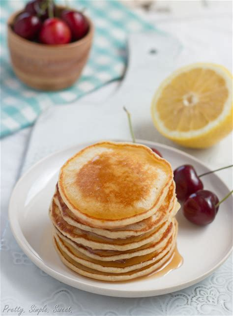

Lemon Pancakes

Description
Sweet and tangy, these moist, delicate pancakes are bursting with lemon flavor!
Ingredients
- Zest and juice from one lemon (about 1 tablespoon zest, 1/4 cup juice)
- 3 tablespoons (37g) granulated sugar
- 1 cup (140g) all-purpose flour, sifted
- 1 teaspoon baking powder
- 1/4 teaspoon baking soda
- 1/4 teaspoon salt
- 1 large egg
- 1 cup (240 ml) buttermilk
- 1 teaspoon pure vanilla extract
- 2 tablespoons (30g) butter, melted
- Canola oil/cooking spray , for coating the pan
Steps
- In a large bowl, mix lemon zest and sugar until well combined. Add flour, baking powder, baking soda, and salt. Mix to combine, then set aside.
- In a separate medium bowl, whisk together egg, buttermilk, melted butter, vanilla extract and lemon juice.
- Make a well in the dry ingredients and pour in the wet ingredients. Stir until combined and moistened. Be careful not to over mix.
- Heat a griddle or skillet over medium heat. Coat with cooking spray or oil. For each pancake, drop 1/4 cup of batter onto skillet. Cook 1-2 minutes, until surface of the pancakes have some bubbles. Flip carefully and cook another 1-2 minutes. Transfer to a plate and cover loosely with aluminum foil to keep warm. Make sure to coat the skillet before every pancake or batch of pancakes to prevent sticking.
- Serve immediately while pancakes are still warm. Drizzle with maple syrup or desired topping.